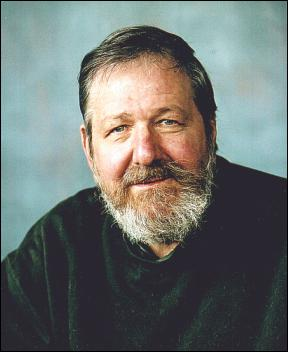

Intro
Aims
Background
Methods
Influence
Questionnaire
Accent Samples
Personnel
Results
Current Research
Cross-cultural
Intonation
References
Bayard Tribute
Anthropology
Otago
|

Donn Bayard: 1940-2002
Sadly, Donn Bayard, whose research and enthusism were very central to this project, passed away on the 8th of September 2002.
James Green has taken over the running of the project and this website, and it is business as usual (as much as it can be 'usual' with Donn). His contact details can be found on the Personnel page
The following obituary is reproduced with permission from the Otago Daily Times. It seems especially appropriate as Donn was an avid reader of the ODT, and an equally avid contributor.
Professor devoted life to debunking myths
Donn Bayard: Academic and humanist

Associate Prof Donn Thomas Bayard, a widely respected University of Otago anthropologist and champion of academic freedoms, died in Dunedin early this month. He was 62.
Prof Bayard, who was in every way a larger than life figure, was born in the United States. He became a pioneering archaeologist in Southeast Asia and, later, a trail-blazing researcher in New Zealand sociolinguistics.
Prof Bayard was an anthropology department staff member for 32 years, having initially been hired by internationally respected archaeologist Prof Charles Higham, the then departmental head.
Current head Dr Ian Frazer recently paid tribute to Prof Bayard's path-breaking contributions in many fields, including Polynesian prehistory, archaeological theory, Southeast Asian prehistory and New Zealand sociolinguistics.
Prof Bayard had also made an "invaluable contribution" to the department's growth and development, Dr Frazer said. Prof Bayard had always been an enthusiastic teacher, helping generations of graduate students achieve their first publications.
Prof Bayard once said he had come to New Zealand to escape the worst of American racism. He was also attracted by a social democracy and the "incredible beauty" of Dunedin and New Zealand.
Despite his academic success, he remained self-effacing, not given to academic grandstanding or one-upmanship.
He had retired from the university in June, during what proved to be an unsuccessful battle against throat cancer. He had earlier been a heavy smoker, until experiencing a stroke, about five years ago.
After retirement, he continued to co-ordinate an international linguistics research project on attitudes to English accents.
Over the years, he became an enthusiastic and prolific writer of letters to the Editor of the Otago Daily Times on a host of issues political, cultural and linguistic, the latter including the vexed term "Pakeha".
He upheld humane ideals and relished a good debate. Many of his contributions were responses to letters by others and, in turn, inspired others to continue the dialogue in print.
He was an untiring critic of what he saw as the excesses of "more market" economics. One of his livelier efforts was published in the Otago Daily Times under the headline: "Rogernomics, Ruthanasia and Jennycide".
He was also a passionate defender of academic freedoms, scholarly independence and integrity, and of the university's statutory role as "critic and conscience of society".
He criticised the university's decision in the late 1990s to abolish the Russian department and make other cuts in European languages.
As he explained in a letter to the Editor in 1997: "To my mind, the main purpose of a university is to convey the richness and variety of human knowledge and experience to students and the public at large, and this is not served by cutting out core European languages any more than it would be by cutting out Maori or Chinese."
A fellow letter writer once accused him of tilting at windmills, a description with which he was more than happy. With quixotic persistence, he worked to "debunk myths" about race, language and culture.
"I might be quixotic in wanting to change opinions. But the windmills are far from imaginary," he said.
To the eternal newspaper debates he brought that rarest of qualities, common sense.
"Honest, open discussion will indeed help to remedy this; hysteria and paranoia will not," he once wrote.
And humour was never far off.
On one occasion, he wrote that he had enjoyed a fellow correspondent's "latest diatribe" but mused, however, that it had "distracted me from plotting the downfall of Western Judeo-Christian civilisation with my fellow neo-Marxist white liberal Maori feminist brethren and sistren."
He was the author of several scholarly works, including Kiwitalk: Sociolinguistics and New Zealand Society (1995), a trail-blazing book on sociolinguistics.
He also served as president of the Linguistic Society of New Zealand (1995-1997).
Among his many scholarly works were a study of the 1968 excavation of the Non Nok Tha site in Thailand, and The Pa Mong Archeological Survey Programme .
His passion for home brewing flowered in the 1970s and contributed to many memorable and lengthy parties at his house in Woodhaugh. The house, with its nearby stream, was appropriately named "Duck Works".
Prof Bayard attracted plenty of attention during his Southeast Asian archeological digs. On some occasions, nearby inhabitants travelled for several days to catch a glimpse of the gentle giant working in their midst.
Born in Cleveland, Ohio, Prof Bayard grew up in working class Chicago, where, as a teenager at high school, his early interest in anthropology was awakened when a teacher encouraged him to read a book by anthropologist George Peter Murdock.
He subsequently won a scholarship to Columbia University where he initially studied chemistry and then geology before opting, more happily, for anthropology.
He emerged from his four years at Columbia in 1961 30kg lighter than when he started, and with a BA in anthropology. His scholarship funding had proved insufficient and he explained the only way he could survive was to stop eating, and to sleep 12 hours a night.
The Columbia faculty in the late 1950s read like a "who's who" of American anthropology, including Charles Wagley, Harold Conklin, Margaret Mead and Morton Fried.
He entered graduate school at the University of Hawaii at the suggestion of an old school friend, and this proved a turning point in Prof Bayard's life. There he gained his doctorate and undertook studies which confirmed his dominant interests in linguistic anthropology and in Southeast Asia prehistory.
He achieved his first major publication in an academic journal, with an article in American Antiq uity , heavily criticising the "New Archaeology". He made his first trip to Thailand and began a lifelong interest in Southeast Asian languages, culture, and archaeology.
He also met Daisy, his wife-to-be, and made his first brief visit to Dunedin in 1967.
His two major achievements at Hawaii were his MA thesis on "The Cultural Relationships of the Polynesian Outliers", and his excavation of Non Nok Tha in Thailand.
Both were highly ambitious projects for a graduate student, involving, on the one hand, a ground-breaking contribution to Polynesian prehistory, and, on the other, the largest excavation that had ever been attempted in Southeast Asia until that time.
After joining the Otago staff, he soon undertook another major research project, directing the Pa Mong Archaeological Survey in the 1970s.
The work was undertaken in the Pa Mong Reservoir area during two dry seasons between 1973 and 1975. The area being surveyed was one of several places on the Mekong River considered suitable for dam construction. The proposed reservoir covered more than 2000sq km, and involved several hundred kilometres of river. More than 100 sites were surveyed and many test excavations carried out.
Otago staff and graduate students contributed to the project, together with archaeological trainees from Cambodia, Laos, Vietnam and Thailand.
This was the first multinational archaeological programme ever carried out in mainland Southeast Asia and proved a remarkable achievement for Prof Bayard and his associate directors, including his wife.
The isolation of the site, its massive area, the danger they worked under and the need to work in several languages meant it was no ordinary archeological project.
His last major contribution to Southeast Asian research was his organisation of a major international symposium on Southeast Asian archaeology for the Pacific Science Congress held in Dunedin in 1983.
Later, his interests turned to pioneering work on New Zealand sociolinguistics.
Prof Bayard had Scottish and Irish ancestry, with touches of English and German.
"Culturally, I'm none of those. I'm Pakeha or Haole (Hawaiian)," he said.
He is survived by his wife and son.
September 21st, 2002
|